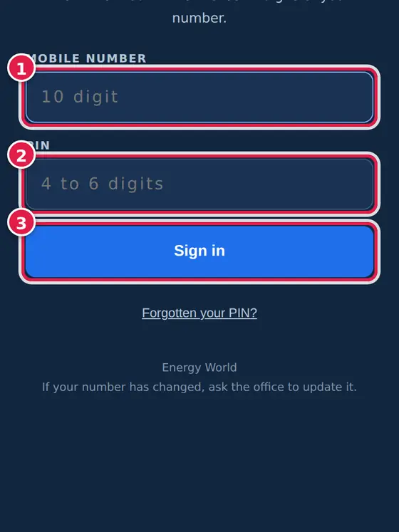

Log a site visit from the site - for the sales executives.
Three rules
Log it at the site, the same day. The location is only true while you are standing there.
No signal? Save anyway. The visit waits on the phone and goes up when the line is back.
Nothing is ever deleted.
Start here
Signing in
Who: Sales executives and the owner.
EW Visit signs in with your mobile number and your PIN - not your name. It asks for your location once; say yes, it is how a visit proves where you were.
Sign in
Type your 10-digit mobile number and your PIN, then tap Sign in. Forgot the PIN? Tap Forgotten your PIN?.

The ? at the top opens this guide; ↻ pulls the latest.